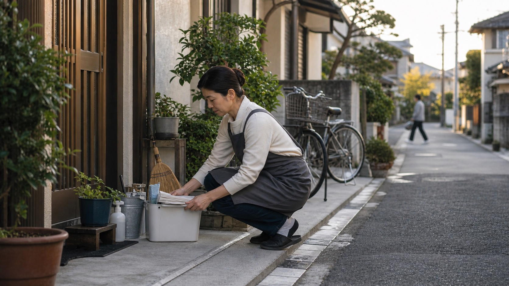

Furusato costuma ser traduzido como cidade natal, mas a palavra carrega mais do que endereço. Ela reúne paisagem, comida, sotaque, família, escola, festival, túmulo ancestral e uma sensação de origem que pode continuar existindo mesmo depois de anos em Tóquio, Osaka ou fora do Japão.

No Obon, no Ano Novo e em feriados prolongados, o retorno ao furusato aparece de forma concreta em trens cheios, estradas lotadas e casas familiares reabertas. Mas também existe furusato imaginado: o interior como promessa de pertencimento em contraste com a cidade funcional.
Para quem migrou
Brasileiros no Japão entendem essa palavra por outro caminho. Muitas vezes vivem entre dois furusatos: o Brasil que ficou na memória e a cidade japonesa onde a vida real acontece. Pertencer pode ser plural.